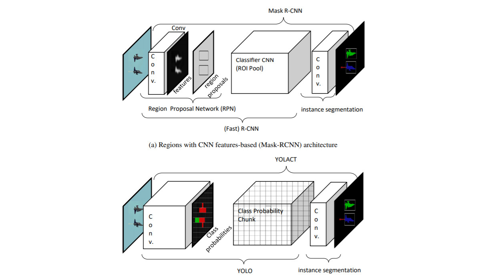
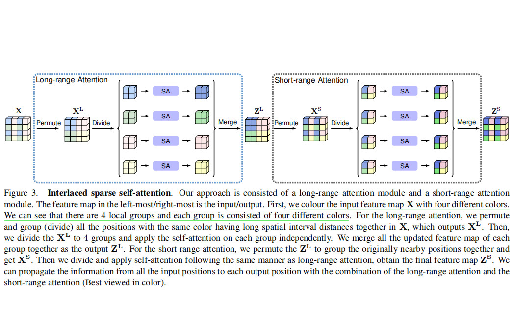
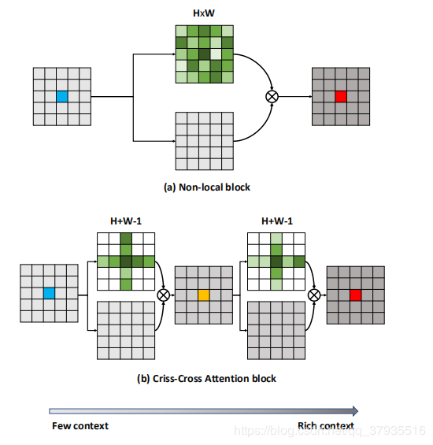
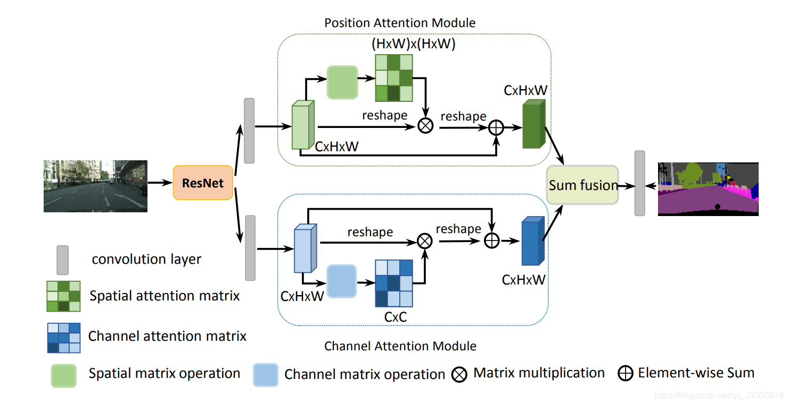
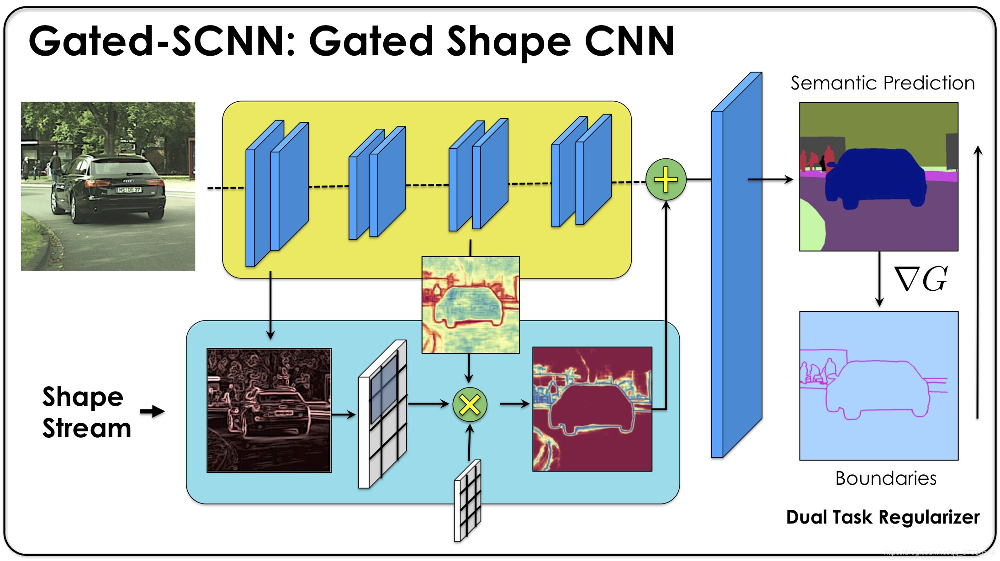

欢迎来到我的博客，记录科研生活中的点滴

A Survey On Deep Learning-based Architectures For Semantic Segmentation On 2D Images
本文介绍了2D图像基于深度学习的语义分割技术的发展，划分为FCN前或早期深度学习、全卷积网络和FCN后三个阶段来讨论，并列举了2013年以来一些重要的语义分割模型。作者最后认为一、基于图的模型由于速度慢而被抛弃；二、针对近两年没有一种模型能够在性能上有较大的提升的问题，未来的方向将集中于基于目标检测的方法和基于注意力的方法。
Read more →

Interlaced Sparse Self-Attention for Semantic Segmentation
本文是语义分割领域的一篇新作，作者运用interlace机制将密集相似矩阵A分解为两个稀疏相似矩阵AL和AS的乘积。结果表明该网络能够节省大量的内存和计算量，特别是高分辨率特征图的时候，并且在六大数据集上也取得了不错的效果。
Read more →


CCNet：Criss-Cross Attention for semantic Segmentation
本文也是Self-Attention机制的文章，该论文在捕获long-range上下文信息的同时提高了计算性能并减少了GPU内存，在Cityscapes、ADE20K和MSCOCO数据集上取得了先进性能。
Read more →

【CVPR 2019】Dual Attention Network for Scene Segmentation
Attention机制在NLP上取得进展后于近年被引入CV中也发挥着重要的作用。这篇是采用Self-Attention机制的用于场景分割的文章，通过引入自注意力机制(self-attention mechanism) 在特征的空间维度和通道维度分别抓取特征之间的全局依赖关系，增强特征的表达能力，并在一些数据集上显著提升了性能。
Read more →

【ICCV 2019】Gated-SCNN: Gated Shape CNNs for Semantic Segmentation
这篇论文是2019年语义分割领域的最新成果，采用双流CNN和ASPP进行语义分割处理，在细小的物体上有着很大的提升。
Read more →